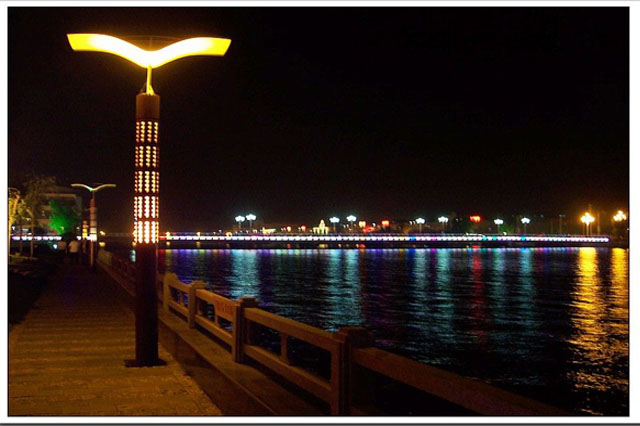

欢迎来到沂源
沂源县 地处鲁中腹地，是淄博、泰安、莱芜、临沂、潍坊五个市的结合部。1944年建县，因沂河发源地而得名。总面积1636平方公里，辖10个镇、2个街道办事处、1个省级经济开发区，633个行政村，人口56万。
织女洞
织女洞位于沂源县燕崖乡牛郎－织女旅游区。洞因溶蚀作用形成，高约8m，宽7m，深10m许。

历山街道
历山街道，是中国山东省淄博市沂源县下辖的一个乡镇级行政单位。以建设生态历山，打造宜居环境；发展街道经济，打造殷实街道；为建设幸福、宜居、和谐新历山而努力奋斗。
鲁山
鲁山山系属泰沂山脉，主峰海拔1108.3米，是山东省第四高峰，山地以石灰岩和花岗岩为主，花岗岩与泰山花岗岩层相似，其形成年龄都在25亿年左右，素有“小泰山“之称。
沂河
沂河流域自然风光秀丽，名胜古迹荟萃。沿岸有沂源猿人遗址、织女洞、并寨汉画像墓、阳都故城、禹国故城、金雀山、银雀山汉墓群、郯国故城等文化古迹。
景点速览
美丽的风景，往往能给人带来心旷神怡的感觉，无论你遇到了什么烦心事，尽管出去走走，看看祖国的美丽的大好河山，敬请陶醉在这美景之中吧。